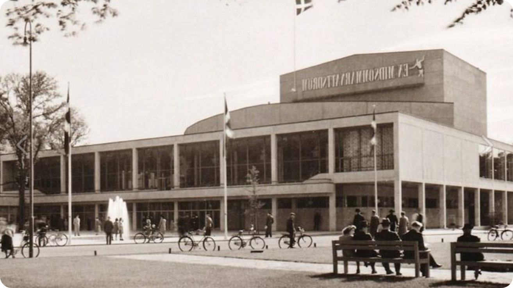

Театр драмы имени В.В.Маяковского
Театр драмы имени В.В.Маяковского

Театр драмы — это место, где оживают истории, где каждый спектакль становится событием. Мы предлагаем вам классические и современные постановки, талантливую труппу и атмосферу настоящего театра.
В нашем репертуаре — драмы, комедии, музыкальные спектакли и постановки для детей. Выбирайте, бронируйте, приходите — и становитесь частью магии сцены.